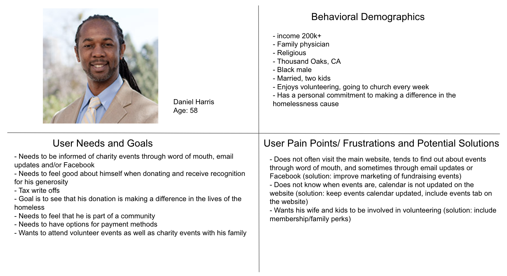
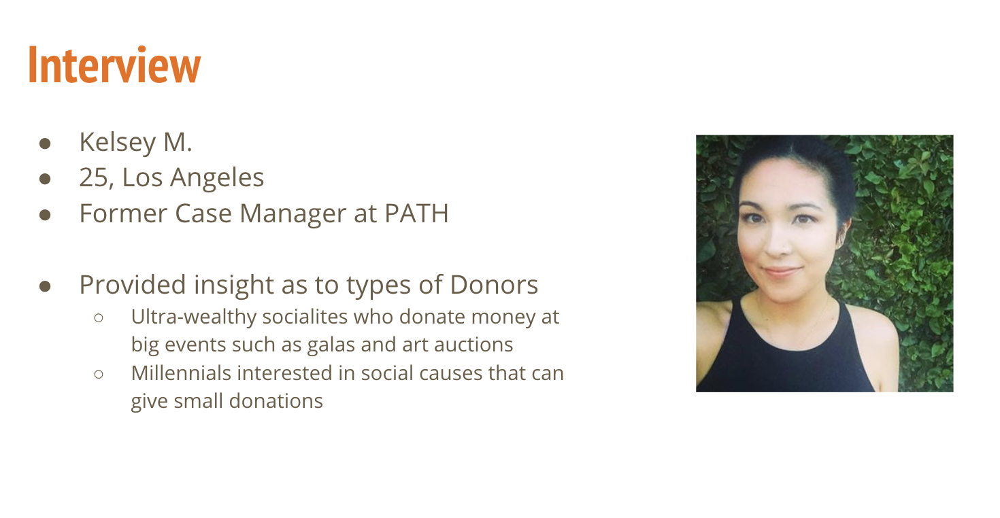
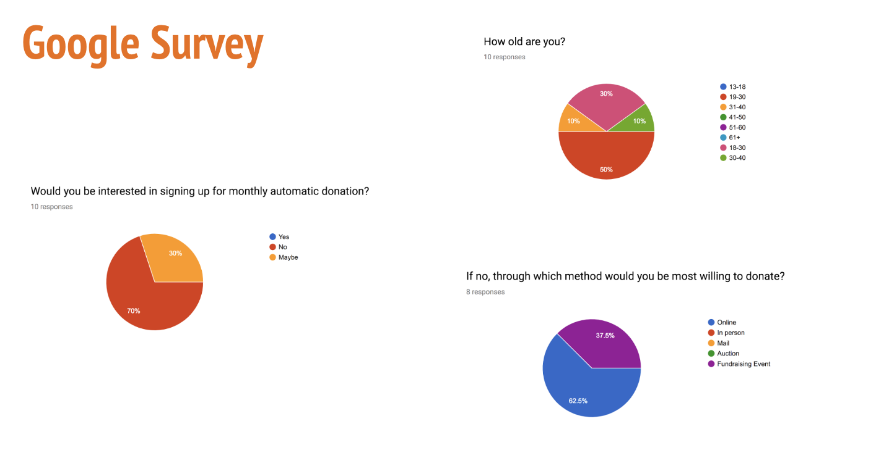
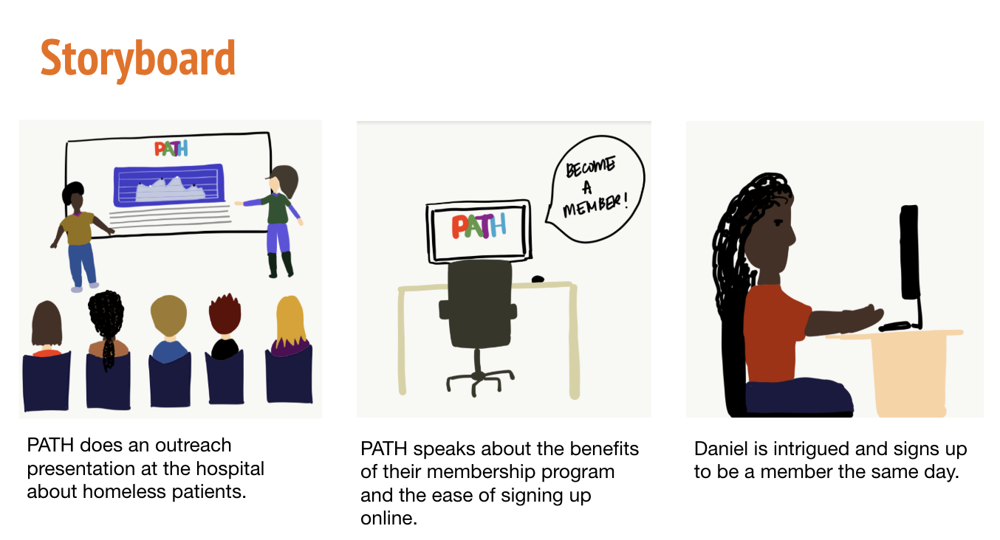
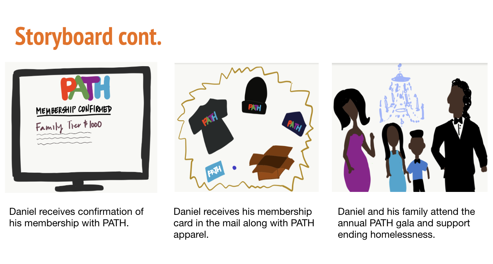
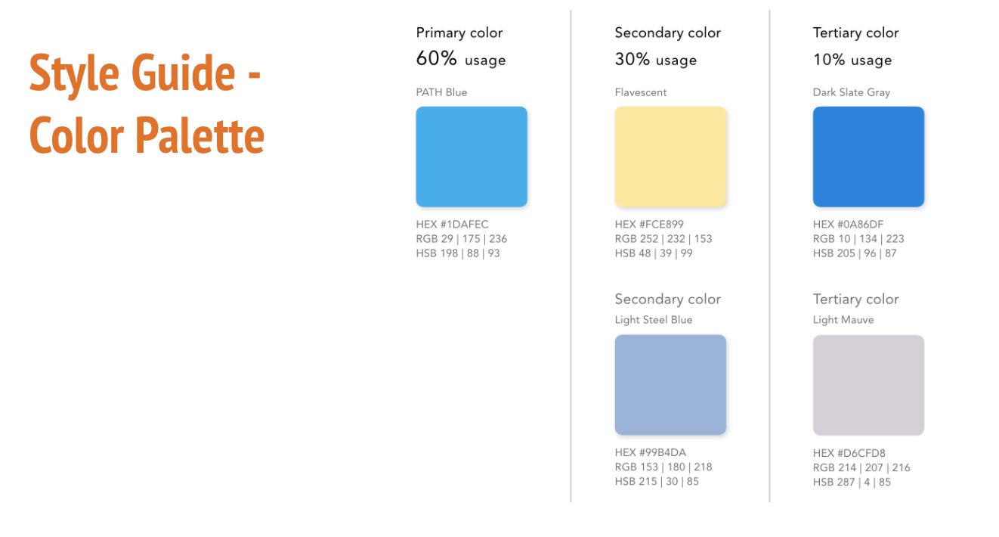
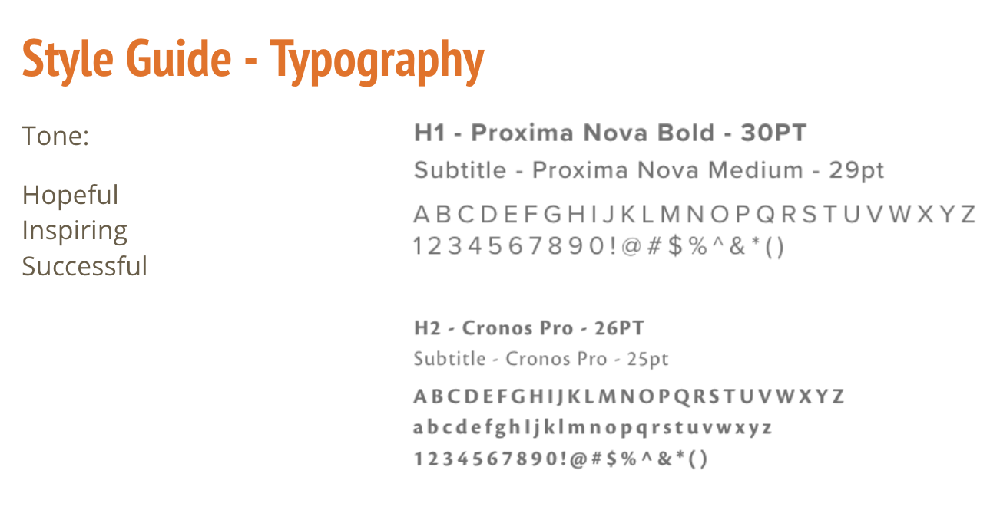
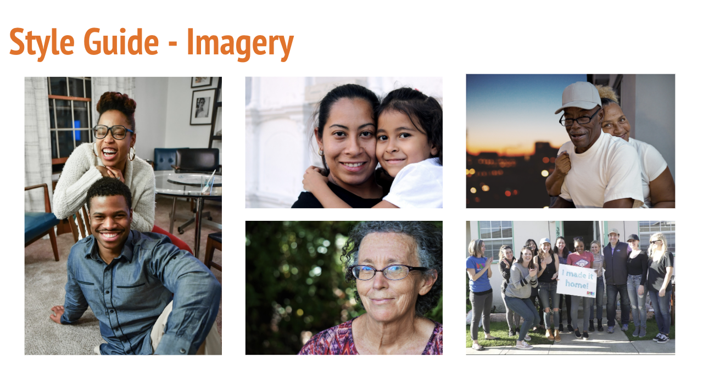
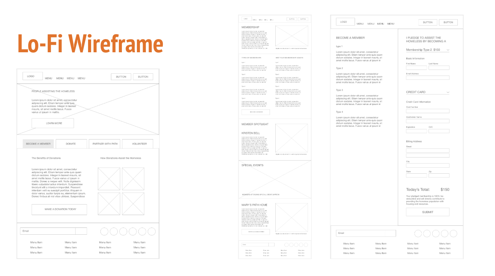
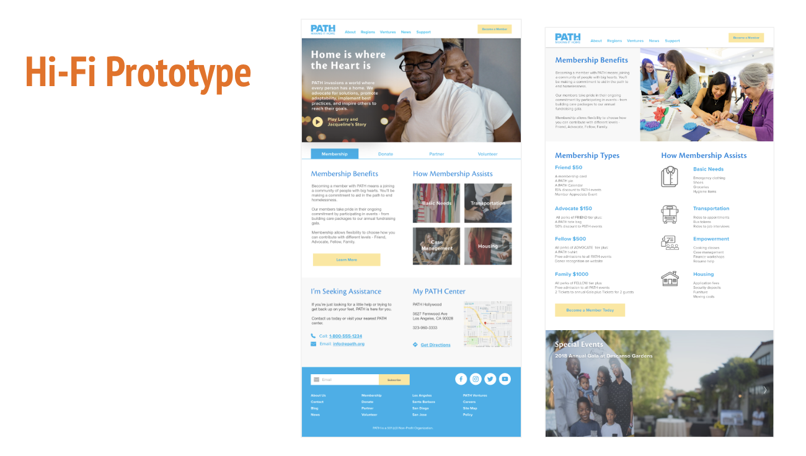

PATH = People Assisting the Homeless Mission: end homelessness for individuals, families and communities What they do: help people find permanent housing and provide case management, medical and mental healthcare, benefits advocacy, employment training, and other services to help them maintain their homes
  People Assisting the Homeless “PATH” was designed to end homelessness for individuals, families, and communities. We have observed that PATH’s website is unclear in providing a way for to attract more young donors. How might we improve PATH so that our donors get involved in various level of making donations from basic needs to transportation and housing needs. This will get 10% increase in total funds raised, and an overall increase in number of homeless individuals receiving housing.
A donor becomes a PATH member and makes a monthly contribution, because they feel invested in a cause to help the homeless to provide a shelter. A member donor feels invested in a cause because it makes themselves feel good and compassionate. A member donor feels good about themselves because they are giving back to the community.
      The future of Path is to attract religious organizations and veterans affairs to fight against homelessness. The future is to collaborate with Riteway Car donations. The net proceeds from the sale of the vehicle will support the Path’s program and services. The donor will be provided with a tax-deductible receipt at the time of pick-up and your donation is tax-deductible to the fullest extent as permitted by law. The future of Path is to widen and spread to other counties in California.